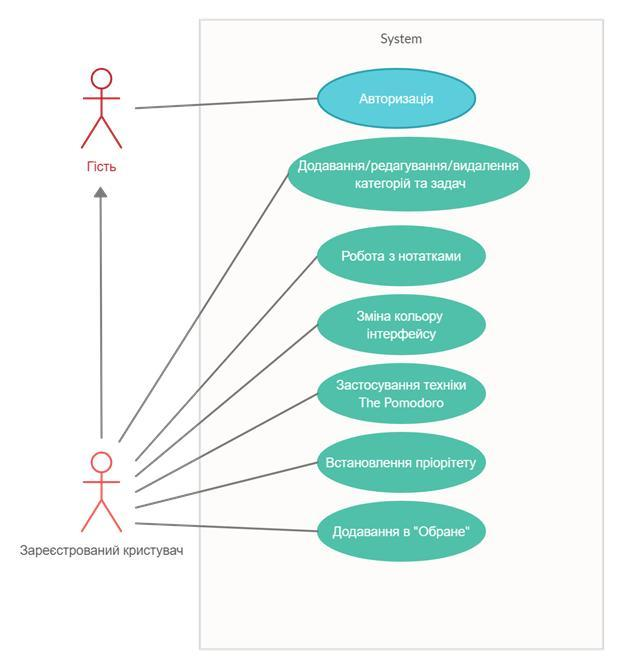

1. Опис бізнес-логіки системи (функціонал майбутньої програми)
Метою написання роботи є створення сервісу для організації справ, проектів, розподілу задач. Завдяки деяким особливостям програми та її функціоналу користувач зможе:
− отримати чітке уявлення про все, що потрібно зробити, і не забути про важливі завдання;
− додавати, редагувати та видаляти папки та задачі;
− організувати завдання і проекти по пріоритету, щоб завжди точно знати, над чим працювати далі.;
− тримати ключові проекти, мітки і фільтри на увазі завдяки функції «Favorites»;
2. Сценарії використання
Діаграма прецедентів системи представлена на рис. 1.
Зареєстрованому користувачу доступна уся функціональність, що і гостю, а також можливість додавати/редагувати/видаляти папки та задачі.
3. Об'єкти взаємодії:
− Гість;
− Зареєстрованний користувач;
